ParaSails is a parallel implementation of a sparse approximate inverse preconditioner, using a priori sparsity patterns and least-squares (Frobenius norm) minimization. Symmetric positive definite (SPD) problems are handled using a factored SPD sparse approximate inverse. General (nonsymmetric and/or indefinite) problems are handled with an unfactored sparse approximate inverse. It is also possible to precondition nonsymmetric but definite matrices with a factored, SPD preconditioner.
ParaSails uses a priori sparsity patterns that are patterns of powers of sparsified matrices. ParaSails also uses a post-filtering technique to reduce the cost of applying the preconditioner. In advanced usage not described here, the pattern of the preconditioner can also be reused to generate preconditioners for different matrices in a sequence of linear solves.
For more details about the ParaSails algorithm, see [&make_named_href('', "node39.html#Chow:1999:APS","[3]")].
#include "HYPRE_parcsr_ls.h" int HYPRE_ParaSailsCreate(MPI_Comm comm, HYPRE_Solver *solver, int symmetry); int HYPRE_ParaSailsSetParams(HYPRE_Solver solver, double thresh, int nlevel, double filter); int HYPRE_ParaSailsSetup(HYPRE_Solver solver, HYPRE_ParCSRMatrix A, HYPRE_ParVector b, HYPRE_ParVector x); int HYPRE_ParaSailsSolve(HYPRE_Solver solver, HYPRE_ParCSRMatrix A, HYPRE_ParVector b, HYPRE_ParVector x); int HYPRE_ParaSailsStats(HYPRE_Solver solver); int HYPRE_ParaSailsDestroy(HYPRE_Solver solver);
The accuracy and cost of ParaSails are parameterized by the real thresh and integer nlevels parameters, 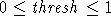 , 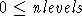 . Lower values of thresh and higher values of nlevels lead to more accurate, but more expensive preconditioners. More accurate preconditioners are also more expensive per iteration. The default values are 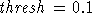 and 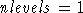 . The parameters are set using HYPRE_ParaSailsSetParams.
Mathematically, given a symmetric matrix A, the pattern of the approximate inverse is the pattern of 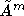 where 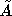 is a matrix that has been sparsified from A. The sparsification is performed by dropping all entries in a symmetrically diagonally scaled A whose values are less than thresh in magnitude. The parameter nlevel is equivalent to m+1. Filtering is a post-thresholding procedure. For more details about the algorithm, see [&make_named_href('', "node39.html#Chow:1999:APS","[3]")].
The storage required for the ParaSails preconditioner depends on the parameters thresh and nlevels. The default parameters often produce a preconditioner that can be stored in less than the space required to store the original matrix. ParaSails does not need a large amount of intermediate storage in order to construct the preconditioner.
A ParaSails solver solver is returned with
where comm is the MPI communicator.int HYPRE_ParaSailsCreate(MPI_Comm comm, HYPRE_Solver *solver, int symmetry);
The value of symmetry has the following meanings, to indicate the symmetry and definiteness of the problem, and to specify the type of preconditioner to construct:
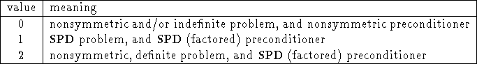
For more information about the final case, see section 7.4.3.
Parameters for setting up the preconditioner are specified using
int HYPRE_ParaSailsSetParams(HYPRE_Solver solver, double thresh, int nlevel, double filter);
The parameters are used to specify the sparsity pattern and filtering value (see above), and are described with suggested values as follows:
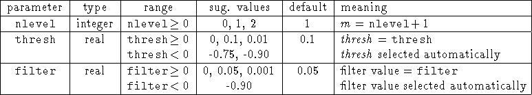
When 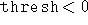 , then a threshold is selected such that 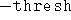 represents the fraction of the nonzero elements that are dropped. For example, if 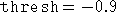 then will contain approximately ten percent of the nonzeros in A.
When 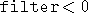 , then a filter value is selected such that 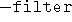 represents the fraction of the nonzero elements that are dropped. For example, if 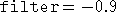 then approximately 90 percent of the entries in the computed approximate inverse are dropped.
A nonsymmetric, but definite and nearly symmetric matrix A may be preconditioned with a symmetric preconditioner M. Using a symmetric preconditioner has a few advantages, such as guaranteeing positive definiteness of the preconditioner, as well as being less expensive to construct.
The nonsymmetric matrix A must be definite, i.e., 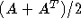 is SPD, and the a priori sparsity pattern to be used must be symmetric. The latter may be guaranteed by 1) constructing the sparsity pattern with a symmetric matrix, or 2) if the matrix is structurally symmetric (has symmetric pattern), then thresholding to construct the pattern is not used (i.e., zero value of the thresh parameter is used).